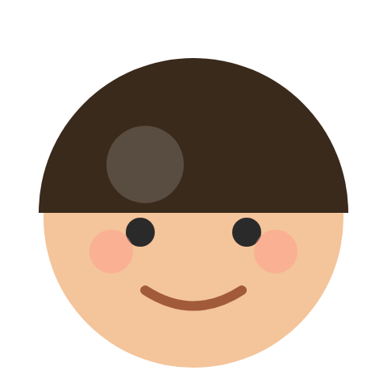

REVIEW
아이로운 태권도장을 다니는 학부모님들의 생생한 후기를 만나보세요.
삼숭 태권도 후기가 궁금하신 분들께 도움이 될 거예요.
초등학교 6학년이라 이제 태권도는 그만 다닐 시기가 아닌가 싶기도 했는데, 아이가 먼저 계속 다니고 싶다고 해서 보내고 있어요^^ 처음에는 그냥 친구들과 함께 다니는 정도라고 생각했는데, 어느 순간부터 태권도 가는 시간을 기다리는 모습을 보니 보내길 잘했다는 생각이 들더라고요. 특히 아이들끼리 분위기가 좋아서 그런지 집에서는 무뚝뚝한 아이가 태권도 이야기는 이것저것 많이 해요ㅎㅎ 친구들과 같이 운동하고 장난도 치면서 지내는 시간이 아이에게는 꽤 즐거운가 봐요. 고학년이다 보니 사춘기도 시작되고 부모 말은 잘 안 들을 때가 많은데, 관장님이나 사범님께서 아이들과 편하게 소통해주시면서도 필요한 부분은 잘 잡아주시는 것 같아 마음이 놓입니다. 무엇보다 억지로 보내는 게 아니라 아이가 스스로 가고 싶어 한다는 게 제일 만족스러워요. 앞으로 중학교 올라가서도 좋은 인연으로 오래 다녔으면 좋겠네요^^
같이 유치원 다니는 친구가 태권도 다니는 걸 보고 저희 아이도 궁금해서 체험수업을 받아봤어요^^ 처음에는 아이가 잘 적응할 수 있을까 걱정했는데, 관장님께서 하나하나 친절하게 설명해주시고 사범님도 아이들과 눈높이를 맞춰 잘 놀아주시는 모습이 너무 좋더라고요. 아이도 수업이 재미있었는지 또 가고 싶다고 해서 보내게 되었습니다😊 아직 유치부라 운동을 잘 따라갈 수 있을까 했는데, 즐겁게 뛰어놀면서 자연스럽게 운동도 하고 친구들과 어울리는 모습이 보여서 만족하고 있어요. 이번에 에어바운스 행사도 다녀왔는데 아이가 정말 신나게 놀았는지 집에 와서도 계속 이야기하네요ㅎㅎ 아이들이 운동뿐만 아니라 즐겁게 추억도 만들 수 있도록 신경 써주시는 것 같아 더 마음에 들어요💕 앞으로도 즐겁게 다니면서 씩씩하게 자랐으면 좋겠습니다^^
여름이어서 수영학원 다니다가 주변에 친구들이 태권도 다니는 걸 보고 본인도 보내달라하길래 이번에 수영 대신 아이로운태권도로 보내게 되었습니다^^ 생각보다 아이가 더 활발하게 자기주장도 잘 표현하게 된 느낌이라 올해까지는 꾸준히 더 보내보려 합니다.
이번 시범 준비를 하면서 아이가 정말 많이 달라졌어요. 예전에는 조금 어려운 동작이 나오면 금방 힘들어했는데, 요즘은 잘 안 되는 부분도 여러 번 연습하면서 끝까지 해보려고 합니다. 품띠를 준비하는 과정 자체가 아이에게 집중력과 끈기를 길러주는 좋은 경험이 된 것 같아요. 단순히 태권도 기술만 배우는 게 아니라 스스로 노력하고 해냈을 때의 성취감까지 배울 수 있어서 부모로서 너무 만족스럽습니다. 앞으로도 즐겁게 성장해가는 모습이 기대됩니다!
워킹맘이다보니 아이를 어디에 맡겨야 할지 늘 고민이었는데, 아이로운 태권도장을 다니면서 마음이 놓였어요. 요즘은 아이를 믿고 맡길 수 있는 학원을 찾는 것도 쉽지 않은데, 관장님과 사범님들께서 아이들 한 명 한 명을 정말 친절하고 따뜻하게 대해주셔서 만족스럽습니다. 처음에는 낯설어하지 않을까 걱정했는데 선생님들을 잘 따르고, 이제는 태권도 가는 시간도 기다릴 만큼 좋아해요. 아이의 눈높이에 맞춰 잘 지도해주시고 세심하게 챙겨주시는 게 느껴져서 부모 입장에서도 믿고 보낼 수 있는 곳인 것 같아요. 유아부 태권도장을 찾고 계신 분들께 추천하고 싶습니다!
아이를 여러 운동에 보내봤는데 태권도는 유독 오래 다니고 있네요. 수업이 단순히 반복적인 동작만 하는 게 아니라 아이들이 지루해하지 않도록 다양한 활동을 섞어서 진행해주시는 것 같아요. 집에 와서도 배운 동작을 보여주고 혼자 연습하는 모습을 보면 아이가 정말 재미있어하는 것 같습니다. 무엇보다 선생님들이 아이들을 편하게 대해주셔서 마음 놓고 보내고 있어요.
맞벌이라 아이가 방과 후 시간을 어떻게 보낼지 고민이 많았는데 아이로운 태권도장을 다니면서 한결 마음이 놓였습니다. 수업 시간 동안 그냥 뛰어놀기만 하는 게 아니라 집중해서 운동하고 규칙을 지키는 것도 배우는 것 같아요. 아이가 친구들과 어울리는 모습도 좋아졌고, 요즘은 태권도 가는 날이면 먼저 가방을 챙길 정도로 좋아합니다. 꾸준히 보내길 잘했다는 생각이 들어요.
초등학교 때부터 다니던 아이가 중학생이 되면서 계속 다닐까 고민했는데 본인이 계속 다니고 싶다고 해서 보내고 있습니다. 중학생이 되니 공부할 것도 많고 앉아 있는 시간도 길어졌는데 태권도장에서 땀을 빼고 오면 확실히 기분전환이 되는 것 같아요. 아이들끼리 분위기도 좋고 선생님께서 중학생들의 특성을 잘 이해해주시는 것 같아서 만족스럽습니다. 운동을 꾸준히 할 수 있는 환경이라는 점이 가장 마음에 들어요.
아이가 에너지가 워낙 많아서 집에서 감당하기 힘들 정도였는데 태권도를 시작하고 나서 확실히 달라졌어요ㅎㅎ 수업 시간에 신나게 뛰고 움직이면서 에너지를 발산하고 오니까 집에서도 조금 차분해진 느낌입니다. 아직 어린데도 선생님 말씀을 듣고 차례를 기다리는 모습이 생겨서 신기했어요. 아이들이 재미있게 참여할 수 있도록 분위기를 잘 만들어주시는 것 같아 만족하면서 보내고 있습니다.
학업 때문에 운동할 시간도 부족하고 아이가 살짝 예민한 상태였는데 태권도를 꾸준히 하면서 많이 달라진 것 같아요😊 자신감도 많이 생긴 것 같고, 힘든 훈련도 끝까지 해내면서 끈기와 자신감이 함께 길러지는 것 같아 좋았습니다. 고등학생이라 공부도 중요하지만 건강하게 스트레스를 해소하고 체력을 관리하는 것도 중요한데, 그런 면에서 태권도를 꾸준히 다니길 잘했다는 생각이 들어요. 고등부 운동을 찾는 분들께 추천하고 싶습니다!

아이 태권도를 시작하고 나서 정말 만족하고 있어요😊 처음에는 낯선 환경이라 조금 걱정했는데, 꾸준히 다니면서 아이가 점점 자신감도 생기고 적극적으로 변하는 모습이 보여서 좋았습니다. 예전보다 스스로 해보려는 모습도 많아지고, 새로운 동작을 배울 때도 포기하지 않고 끝까지 해내려고 하는 모습이 참 보기 좋더라고요. 운동을 하다 보니 체력도 좋아지고 몸도 한층 건강해진 것 같아요. 집에서도 태권도에서 배운 동작을 보여주면서 즐거워하는 모습을 보면 보내길 잘했다는 생각이 듭니다. 아이의 체력과 자신감 향상을 함께 기대하시는 부모님이라면 추천하고 싶어요!
주말에 행사를 자주 하는 태권도장은 드문데 아이로운에서는 아이들을 위한 주말 행사를 자주 해줘서 너무 좋아요^^ 덕분에 저도 몇 시간이라도 여유롭게 휴식시간을 가질 수 있어서 감사하네요. 키즈카페 갈 시간에 태권도장 보내니까 아이도 신나고 저희도 편하고, 서로 행복해서 매번 행사 있으면 보내고 있습니다~ 아이들이 즐거워하는 모습을 보면 보내길 정말 잘했다는 생각이 들어요!
처음에는 태권도만 배우면 좋겠다는 생각으로 보냈는데 다니다 보니 아이가 규칙적으로 생활하는 습관도 생기고, 인사나 예절도 자연스럽게 배우는 것 같아서 만족하고 있어요. 무엇보다 아이가 "오늘 태권도 가는 날이야?" 하면서 기다리는 게 제일 좋네요ㅎㅎ 선생님들도 아이들 한 명 한 명 신경 써주시는 게 느껴져서 믿고 보내고 있습니다. 앞으로도 즐겁게 잘 다녔으면 좋겠어요^^
아이로운 다니면서 아이가 체력도 좋아지고 에너지를 건강하게 발산하는 것 같아서 만족하고 있어요! 수업 분위기도 딱딱하지 않고 아이들이 재미있게 참여할 수 있도록 해주셔서 그런지 태권도 가는 걸 한 번도 싫어한 적이 없네요~
아이 운동 하나 시켜보려고 알아보다가 아이로운 태권도를 다니게 됐는데 생각보다 아이가 너무 좋아해서 만족하고 있어요^^ 단순히 태권도만 배우는 게 아니라 아이들이 즐겁게 참여할 수 있는 활동도 많아서 그런지 매번 가는 날만 기다리네요. 관장님과 사범님께서도 아이들을 잘 챙겨주셔서 안심하고 보내고 있습니다. 체력도 좋아지고 자신감도 생기는 것 같아 여러모로 만족스러워요!
맞벌이를 하다 보니 아이를 유치원에 혼자 오래 남겨두는 것이 늘 마음에 걸렸습니다. 그래서 차량 운행이 가능한 태권도를 찾다가 아이로운 태권도를 알게 되었어요. 처음부터 관장님께서 유치원 앞으로 직접 오셔서 아이 한 명 한 명 안전하게 픽업해 주시는 모습을 보고 믿음이 생겼습니다. 아이도 금방 적응해서 지금은 태권도 가는 날만 기다릴 정도예요. 수업도 즐겁게 참여하고, 집에 와서는 배운 동작을 보여주며 신나게 이야기합니다. 아이가 즐겁게 다니는 것도 좋지만, 무엇보다 믿고 맡길 수 있다는 점이 가장 큰 장점인 것 같습니다. 덕분에 지금까지도 걱정 없이 보내고 있습니다^^
중학생이 되니 학원 일정도 많아 운동을 꾸준히 할 수 있을까 걱정했는데, 아이로운 태권도는 분위기가 좋아서 아이가 스스로 다니고 싶어 하는 곳이다 보니 시간이 빠듯해도 보내고 있는 곳입니다!
낯가림이 심한 아이인데 관장님께서 아이가 인사를 받아줄 때까지 시선도 잘 맞춰주시고, 사범님이나 도장 분위기가 운동만 한다기보다 친구들과 함께 뛰고 웃으며 자연스럽게 수업이 진행되는 거 같았어요. 그 덕분에 집에서는 감사합니다를 먼저 말하는 모습이 많아졌네요ㅎㅎ 아이가 즐겁게 성장하는 모습이 보여 만족도가 정말 높습니다~
아이가 처음에는 낯을 많이 가려서 적응을 걱정했는데, 관장님과 사범님들께서 따뜻하게 지도해 주셔서 금방 친구들도 사귀고 즐겁게 다니고 있습니다. 수업이 지루하지 않고 아이들이 재미있게 참여할 수 있도록 다양하게 진행해 주시는 점이 정말 좋았어요. 태권도 실력도 늘었지만 인사하는 습관이나 예절도 자연스럽게 배우는 모습이 보여서 부모로서 만족도가 높습니다.
여러 학원도 체험해보고 태권도장도 몇 군데 가봤는데 아이로운 태권도가 가장 마음에 들었어요. 무엇보다 아이가 너무 재미있게 수업에 참여하고, 관장님과 사범님들께서 아이들 눈높이에 맞춰 함께 놀아주시고 지도해주시는 모습이 인상적이었습니다. 체험수업이 끝나자마자 아이가 "여기 다니고 싶어!"라고 해서 바로 등록하게 되었어요. 운동도 하고 친구들과 즐겁게 지내는 모습을 보니 보내길 정말 잘했다는 생각이 듭니다. 앞으로도 즐겁게 오래 다녔으면 좋겠습니다.
처음에는 학교 돌봄에 계속 있을까 고민했는데, 활동적인 시간을 보내는 게 더 좋을 것 같아 아이로운 태권도에 보내기 시작했습니다. 막상 다녀보니 아이가 집에 와서 밥도 더 잘 먹고 잠도 일찍 자는 등 생활습관이 훨씬 좋아졌어요. 무엇보다 태권도 가는 날을 기다릴 만큼 즐거워해서 부모로서 만족도가 큽니다. 관장님과 사범님들께서 아이들을 세심하게 챙겨주시고 즐겁게 수업을 이끌어주셔서 안심하고 보내고 있습니다. 앞으로도 꾸준히 다닐 예정입니다.
아이가 낯을 많이 가려 처음엔 적응을 걱정했는데, 사범님들께서 먼저 다가와 챙겨주셔서 금방 친구들도 사귀고 즐겁게 다니게 되었습니다. 작은 변화도 세심하게 알려주셔서 부모 입장에서도 믿음이 갔어요. 아이가 스스로 목표를 세우고 노력하는 모습까지 생겨 정말 만족하고 있습니다.
입시를 앞두고 운동을 그만둘까 고민했는데 오히려 태권도를 계속 다니면서 집중력과 생활 리듬을 유지하는 데 큰 도움이 됐습니다. 수업 시간이 알차고 분위기도 좋아 아이가 스트레스를 건강하게 풀 수 있는 공간이 된 것 같아요. 관장님께서 아이들과 소통을 잘해주시고 격려도 많이 해주셔서 꾸준히 다닐 수 있었습니다. 공부와 운동을 함께 병행하기에 정말 좋은 도장이라고 생각합니다.
초등학교 3학년이 되면서 체력도 키우고 규칙적인 운동을 시켜주고 싶어 등록했는데 기대 이상이에요. 예절과 책임감도 함께 배우는 것 같습니다. 아이가 스스로 목표를 세우고 열심히 수련하는 모습이 보기 좋고, 관장님과의 소통도 잘 되어 믿고 맡길 수 있어요. 앞으로도 꾸준히 다닐 예정입니다. 👍
5살이라 처음엔 잘 적응할 수 있을까 걱정이 많았는데, 선생님들께서 아이 눈높이에 맞춰 정말 잘 지도해 주세요. 태권도 가는 날만 기다릴 정도로 너무 좋아하고, 집에서도 배운 인사와 예절을 자연스럽게 실천하는 모습을 보면 보내길 잘했다는 생각이 듭니다. 체력도 좋아지고 자신감도 많이 생겨서 만족하고 있어요. 😊
중학생이 되면서 운동을 안 하려고 해서 걱정이 많았는데, 아이로운 태권도장을 다니면서 꾸준히 운동하는 습관이 생겼습니다. 체력도 많이 좋아졌고 스트레스도 건강하게 풀 수 있는 것 같아요. 친구들과 함께 즐겁게 운동하다 보니 자연스럽게 자신감도 생겼습니다. 학생 눈높이에 맞춰 지도해 주시는 모습이 인상적이었고, 앞으로도 계속 보내고 싶은 도장입니다.
삼숭동에서 여러 태권도장을 알아보다가 이곳을 선택했는데 정말 잘한 선택이었습니다. 단순히 운동만 하는 게 아니라 친구들과 협동하는 법이나 예절도 자연스럽게 배울 수 있어요. 아이 체력도 좋아지고 학교생활도 훨씬 적극적으로 변했습니다. 차량 운행도 편리하고 수업 분위기도 밝아서 믿고 보낼 수 있는 태권도장입니다.
아이가 처음엔 낯도 많이 가리고 운동도 별로 안 좋아했는데, 아이로운 태권도장에 다니기 시작하면서 매일 태권도 가는 날만 기다립니다. 관장님과 사범님들께서 아이 한 명 한 명을 세심하게 지도해 주신 덕분에 자신감도 많이 생겼어요. 예전보다 인사도 잘하고 스스로 할 일을 챙기는 모습을 보면 부모로서 정말 만족스럽습니다. 운동뿐 아니라 인성교육까지 함께 챙길 수 있어서 추천드립니다.
처음에는 태권도가 어렵게 느껴졌는데 관장님이 이해하기 쉽게 알려주셔서 지금은 자신 있게 운동하고 있습니다. 수업도 체계적이라 배운 내용을 차근차근 익힐 수 있어서 좋습니다. 운동하면서 체력도 좋아지고 스트레스도 풀리는 것 같아요. 항상 신경 써서 지도해 주시는 관장님께 감사드리고 친구들에게도 추천하고 싶은 도장입니다.
아이를 믿고 맡길 수 있는 태권도장을 찾고 있었는데 정말 좋은 선택이었다고 생각합니다. 관장님께서 아이 한 명 한 명을 세심하게 살펴주시고, 칭찬과 격려를 아끼지 않아 아이도 매번 즐겁게 수업에 참여하고 있습니다. 수업이 체계적이라 실력도 꾸준히 늘고, 깨끗한 환경 덕분에 부모 입장에서도 더욱 만족스럽습니다.
6년째 아이가 다니고 있어요 좋아합니다
아이들 성장에 이로운 태권도를 가르치겠다는 관장님의 다짐이 담긴 아이로운 태권도~ 아이 2명 보내고 있어요. 결제일 변경으로 지금은 다른 금액이고요. 새로 시작하는 젊은 관장님의 열정이 느껴집니다. 번창하시길 바랍니다~
7살첫 학원이라 걱정부터 앞서면서 보냇는데 요즘은 너무 너무 믿고 보내고 잇습니다 !!👍관장님 사부님 모두 세심하게 봐주시구요 늘 아이들입장에서 먼저 생각해주세요 😊같이 다니는 형들 친구들도 너무 잘챙겨주고 뭐 하나 빠지지 않는 학원입니다 👍다양한 활동도 많이하고 관장님과 소통도 너무 원활하고 아이들의 대한 진심이 느껴집니다 맞벌이라 픽업문제도 걱정없이 보내고 잇구요 정말 문앞까지 오셔서 픽업해주세요 🚌 아이도 너무 좋아하고 아파도 유치원은 가기싫어해도 태권도는 너무 가고 싶어할정도로 좋아합니다 😂 정말 믿고 보내는 학원중 하나에요 태권도는 역시 아이로운 이네요 !! 🥋🥋🥋
삼숭동에 있는 도장은 다 상담하고 보내게 된 곳인데 이제 7살 된 아이가 금요일만되면 아이가 달력에 x표시하면서 도장가는 날만 기다리네요~ 이 모습보고 아이로운태권도 선택하기 잘했다 확신들었어요!!!! 제가 주에 한번씩 하원하러 가는데 갈때마다 관장님과 사범님이 아이 눈높이에 맞춰서 잼있게 수업해주시더라구요~ 그래서 아이가 더 좋아하는것같아요!! 한달 보내보니 너무 만족스러워서 도장 알아보시는 학부모님들 상담한번 해보시면 좋을것같아서 리뷰 남겨요~
매달 적어도 1번은 태권도 행사가 있습니다~ 시즌에 맞춰서 각종 이벤트 행사로 좋은 추억을 만들어주시고 아이들이 얼마나 성장했는지도 부모님들을 모셔서 꼭 보여주시더라구요~ 그리고 다니는 모든 애들이 다 착해요~ 체육관안에서 누가 시키지 않아도 형들이 동생들을 맡아서 챙기는 모습들이 너무이뻐보였습니다☺️ 인성과 체력 두가지를 다 잡을 수 있는 ~ 제가원하는 체육관의 느낌입니다.
중학생이 되면서 운동을 계속할지 고민이 많았는데, 아이가 아이로운 태권도는 계속 다니고 싶다고 해서 지금까지 꾸준히 보내고 있어요. 옥정동에서 삼숭동까지 가야 해서 처음에는 걱정도 있었는데 버스로 15분 정도라 아이가 직접 다니는 게 금방 익숙해졌고, 시간도 크게 부담되지 않는다고 하네요. 중학생이라 학업 스트레스도 많은데 운동하면서 체력도 좋아지고 자신감도 많이 생긴 것 같아요. 앞으로도 오래 다니길 바래봅니다^^
체계적으로 놀이와 수업을 아이들의 난이도에 맞춰서 가르쳐주는 곳 같습니다. 원래도 운동을 좋아하는 아이지만 더좋아하게 되었구요~ 같이 다니는 친구들 보면 모두 만족하고 있습니다~ 특히 제일 좋은건 아이들에게 좋은 추억을 만들어주고자 노력하시는 관장님과 사범님들의 노력이 최고세요👍👍👍👍
맨처음엔 흥미가없다가 점점 자신감이 붙더니 품새도 좋아지고 얼마전 참여수업 체력단련하는거 봤는데~~와우 운동 제대로 시키더라구요!!!! 더 좋았던건 단련하다 힘든 친구.동생들이 서로 응원해주고 챙겨주는 화기애애함이 너무 마음이 따뜻했습니다. 감동~~관장님의 따뜻한 마음들이 아이들에게 스미지않았나 생각합니다~